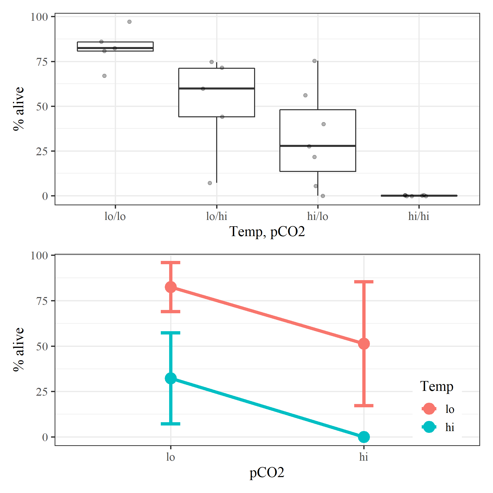

library(knitr)
opts_chunk$set(warning = FALSE, message = FALSE, dev.args = list(bg = 'transparent'), eval = T)
library(tidyverse)
library(patchwork)
library(here)
data(expdat)toplo <- expdat %>%
unite('temp, pCO2', temp_trt, pco2_trt, sep = '/') %>%
mutate(
`temp, pCO2` = factor(`temp, pCO2`, levels = c('lo/lo', 'lo/hi', 'hi/lo' ,'hi/hi'))
)
p1 <- ggplot(toplo, aes(x = `temp, pCO2`, y = alive)) +
scale_y_continuous('% alive') +
geom_boxplot(outlier.size = -1) +
geom_jitter(alpha = 0.3, width = 0.15) +
theme_bw(base_family = 'serif', base_size = 14) +
labs(x = 'Temp, pCO2')
toplo <- expdat %>%
group_by(temp_trt, pco2_trt) %>%
summarize(
ave = mean(alive, na.rm = T),
lov = t.test(alive)$conf.int[1],
hiv = t.test(alive)$conf.int[2]
) %>%
ungroup %>%
mutate(
temp_trt = factor(temp_trt, levels = c('lo', 'hi')),
pco2_trt = factor(pco2_trt, levels = c('lo', 'hi'))
)
allv <- expdat %>%
mutate(
temp_trt = factor(temp_trt, levels = c('lo', 'hi')),
pco2_trt = factor(pco2_trt, levels = c('lo', 'hi'))
) %>%
select(alive, temp_trt, pco2_trt, CTD) %>%
group_by(temp_trt, pco2_trt, CTD) %>%
mutate(
rep = 1,
rep = cumsum(rep)
) %>%
unite('uni', CTD, temp_trt, rep, remove = F)
p2 <- ggplot(toplo, aes(x = pco2_trt, colour = temp_trt)) +
# geom_line(data = allv, aes(y = alive, group = uni), linetype = 'dotted') +
geom_point(size = 5, aes(y = ave)) +
geom_errorbar(aes(ymin = lov, ymax = hiv), width = 0.1, size = 1.5) +
geom_line(aes(y = ave, group = temp_trt), size = 1.5) +
theme_bw(base_family = 'serif', base_size = 14) +
labs(
x = 'pCO2',
y = '% alive',
colour = 'Temp'
) +
theme(legend.position = c(0.9, 0.2))
p <- p1 + p2 + plot_layout(ncol = 1)
png(here('raw/survive.png'), height = 6.5, width = 6.5, family = 'serif', res = 300, units = 'in')
print(p)
dev.off()knitr::include_graphics(here('raw/survive.png'))
Run a simple test:
mod <- lm(asin(alive / 100) ~ temp_trt * pco2_trt, data = expdat)
summary(mod)##
## Call:
## lm(formula = asin(alive/100) ~ temp_trt * pco2_trt, data = expdat)
##
## Residuals:
## Min 1Q Median 3Q Max
## -0.48834 -0.07345 0.00000 0.07161 0.50868
##
## Coefficients:
## Estimate Std. Error t value Pr(>|t|)
## (Intercept) -4.532e-17 8.927e-02 0.000 1.000000
## temp_trtlo 5.604e-01 1.383e-01 4.052 0.000623 ***
## pco2_trtlo 3.448e-01 1.262e-01 2.731 0.012873 *
## temp_trtlo:pco2_trtlo 9.202e-02 1.956e-01 0.470 0.643097
## ---
## Signif. codes: 0 '***' 0.001 '**' 0.01 '*' 0.05 '.' 0.1 ' ' 1
##
## Residual standard error: 0.2362 on 20 degrees of freedom
## Multiple R-squared: 0.7314, Adjusted R-squared: 0.6911
## F-statistic: 18.15 on 3 and 20 DF, p-value: 6.285e-06anova(mod)## Analysis of Variance Table
##
## Response: asin(alive/100)
## Df Sum Sq Mean Sq F value Pr(>F)
## temp_trt 1 2.14509 2.14509 38.4536 4.67e-06 ***
## pco2_trt 1 0.88070 0.88070 15.7877 0.0007487 ***
## temp_trt:pco2_trt 1 0.01235 0.01235 0.2214 0.6430966
## Residuals 20 1.11568 0.05578
## ---
## Signif. codes: 0 '***' 0.001 '**' 0.01 '*' 0.05 '.' 0.1 ' ' 1No interaction:
mod <- lm(asin(alive / 100) ~ temp_trt + pco2_trt, data = expdat)
summary(mod)##
## Call:
## lm(formula = asin(alive/100) ~ temp_trt + pco2_trt, data = expdat)
##
## Residuals:
## Min 1Q Median 3Q Max
## -0.51517 -0.09454 0.01917 0.05580 0.48951
##
## Coefficients:
## Estimate Std. Error t value Pr(>|t|)
## (Intercept) -0.01917 0.07794 -0.246 0.808103
## temp_trtlo 0.60641 0.09596 6.319 2.89e-06 ***
## pco2_trtlo 0.38312 0.09462 4.049 0.000578 ***
## ---
## Signif. codes: 0 '***' 0.001 '**' 0.01 '*' 0.05 '.' 0.1 ' ' 1
##
## Residual standard error: 0.2318 on 21 degrees of freedom
## Multiple R-squared: 0.7284, Adjusted R-squared: 0.7026
## F-statistic: 28.16 on 2 and 21 DF, p-value: 1.137e-06anova(mod)## Analysis of Variance Table
##
## Response: asin(alive/100)
## Df Sum Sq Mean Sq F value Pr(>F)
## temp_trt 1 2.1451 2.14509 39.934 2.885e-06 ***
## pco2_trt 1 0.8807 0.88070 16.396 0.0005777 ***
## Residuals 21 1.1280 0.05372
## ---
## Signif. codes: 0 '***' 0.001 '**' 0.01 '*' 0.05 '.' 0.1 ' ' 1{kind=link}